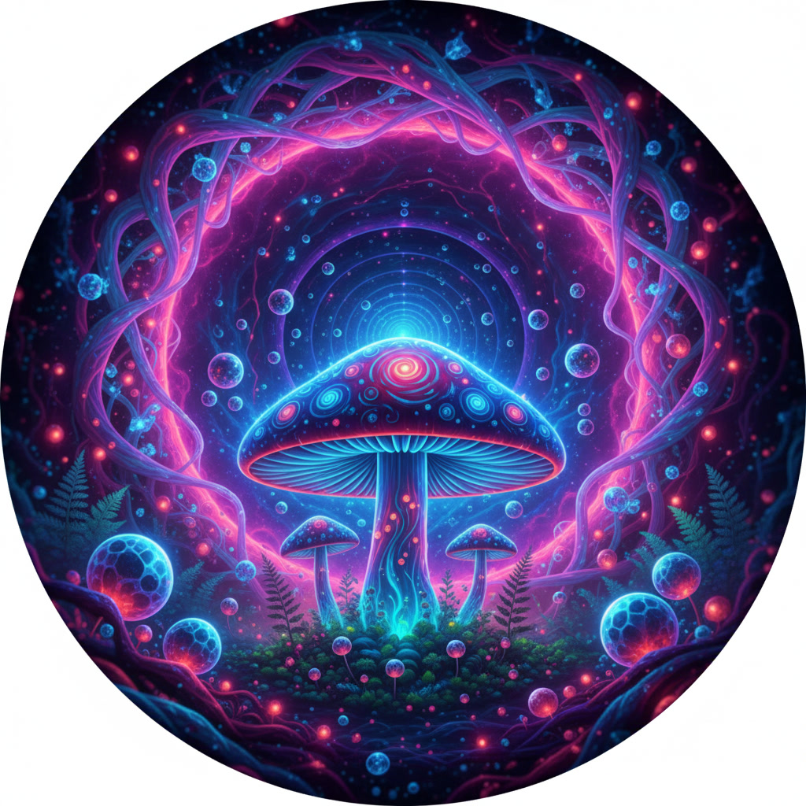

Главная
Музыка
Творчество
AI Studio
← Творчество
📷 Фото
Фотографии, обложки и визуальные работы. Нажмите на снимок, чтобы открыть его отдельно.

Фото 01
Фото 02
Фото 03
Фото 04
Take Me Back — Spring
Take Me Back — Autumn
Take Me Back — Summer
Take Me Back — Winter